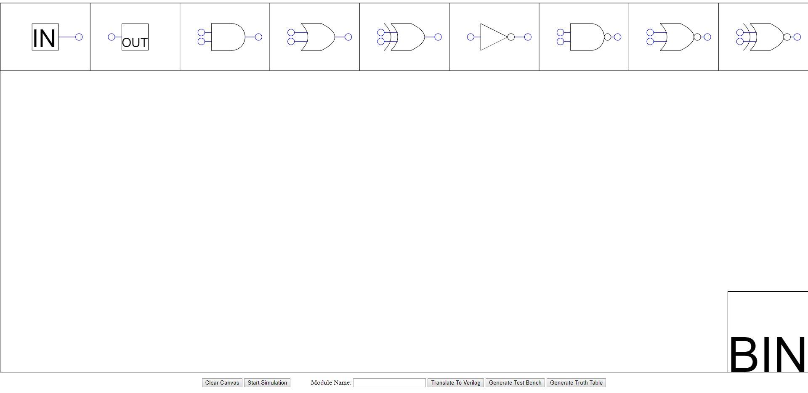
Created as a part of my final year disertation, this web app allows users to draw logic diagrams by dragging and dropping componenets. Diagrams can then be simulated to test their functionality and can also be automaticaly converted to Verilog HDL. As well as the Verilog code for the module, the app can also generate a test bench. The project is open source and can be used under the GNU General Public License.
Use the App See it on Github
In this project the logo if the Lincoln University Student's Union was searched for in a larger image. This was done through several steps of cleaning up the input image before analysing the signatures of connected componenets to find the best match.
The input image is first resized and converted to grayscale using bilinear interpolation:
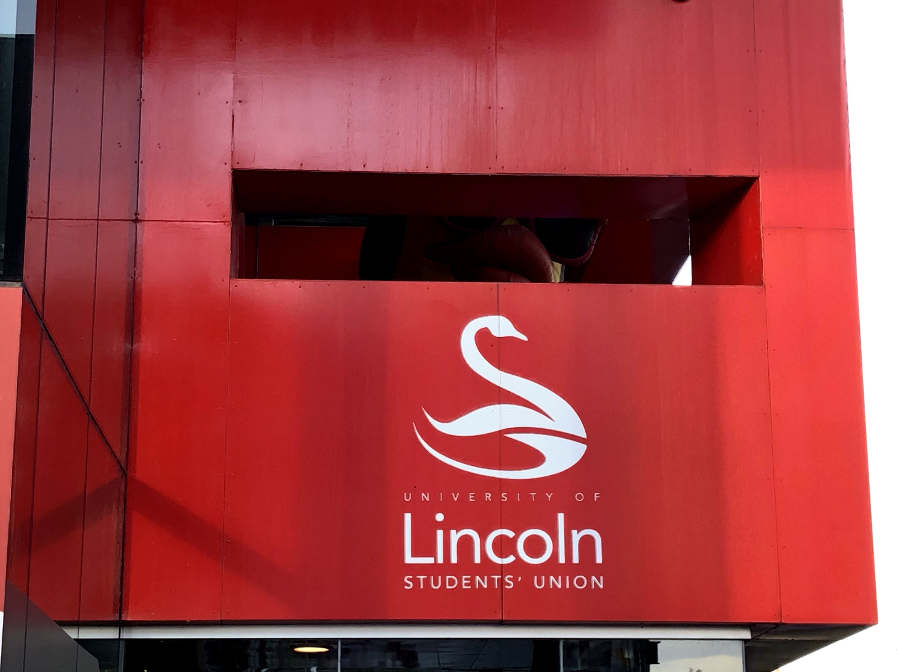
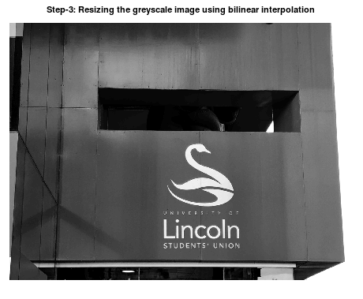
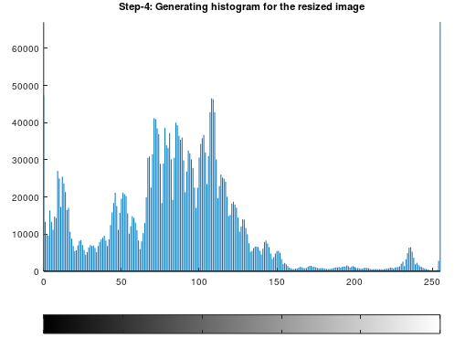
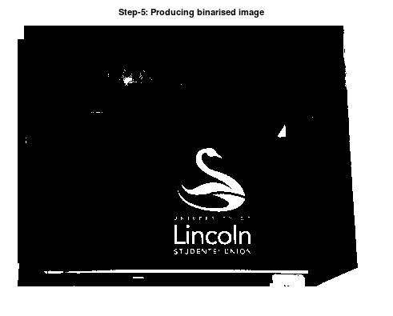
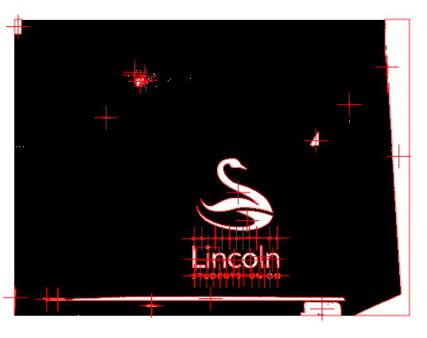
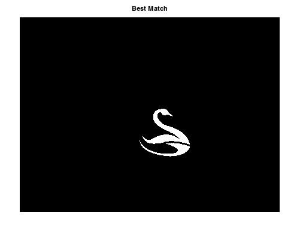
Inspired by the above Numberphile video, I created two solutions to find strings and loops in Pi. The first, takes a user's integer input
and searches the digits of Pi for that value. Once it is found, the index is used as the new search value.
E.g. pi is 3.14159265358979323846, the number 2 can be found at position 5 (if we start with the first decimal place = position 0), 5's first occurance is at position 8, 8 at 10, etc.
The conjecture is that all starting points will loop back to their starting number, or terminate in a self identifying number (e.g. 6 is at position 6).
The main issue is that it is unkown how many digits will be needed to find the first occurance of a given number, so this solution searches the current space and if no match is found it doubles the number of digits and tries again.
This means that it can, in theory, find the index of any number given infinite time and resources.
Unfortunatley, for real world application a solution requiring infinite time to run isn't very handy. Very few loops or strings can be calculated this way in a reasonable time. The main bottleneck is the calculation of Pi, taking tens of minutes to compute even a hundred thousand digits. So the second solution combs through a pre-calculated list of digits. Unfortunatley, even with 150 million digits most cycles for values between 0 and 100 cannot be found.
The probability of finding a string of length $d$ in a random string (Pi), of length $N$ is: $$P = 1 - \frac{1}{ e^\left(0.1^d N\right)}$$ Graphing these probabilities with $N = 10^6$ and values of $d$ between 1 and 9, shows us the following:
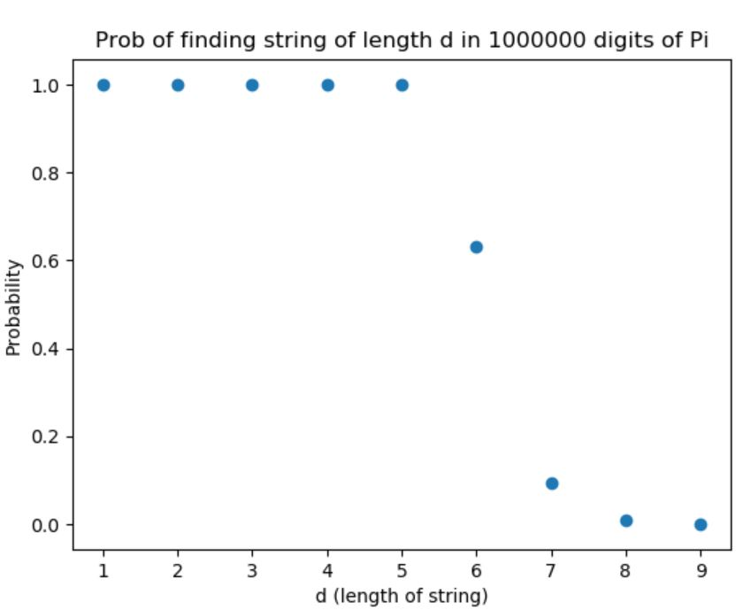
Repeating this graphing process with different values for n, where $ n = \log_{10} N$, shows that the relationship between $n$ and $d$ is as follows:
Knowing this, we can say that to have a probability of 0.65 (or more) of finding a loop in pi, the maximum length of any string in that loop must be less than or equal to $log_{10}N$, where $N$ is the number of digits of Pi we have available. Furthermore, with the current max search domain of 150million digits, we know that if a string exceeds 8 digits, we are unlikely to find it.
Download 1st Solution Download 2nd Solution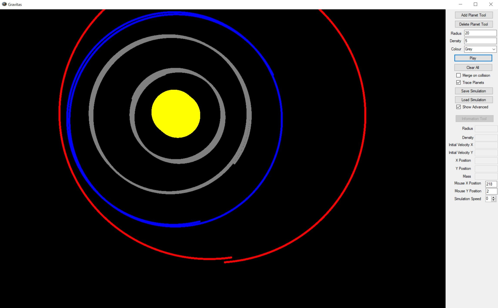
Written in VB.Net, Gravitas is a 2D Newtonian Gravity Simulator designed to help GCSE Physics students better visualise orbital motion. It allows the user to draw planet objects on a canvas with a defined radius and average density. From this, the force due to gravity can be simulated. The software has variable simulation speed, options to handle collisions, and a path tracing option to better visualise orbital motion. Users can also save and load interesting simulations.
Download Gravitas Download Design Documentation See it on GitHub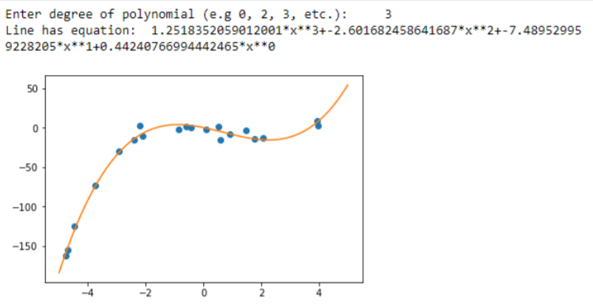
This Python code utilises NumPy and Matplotlib. It reads data in from a CSV file and plots it on a scatter plot. Then, a polynomial is calculated and plotted with the user's specified degree. This allows the user to try different polynomials to find a fitting line for their data
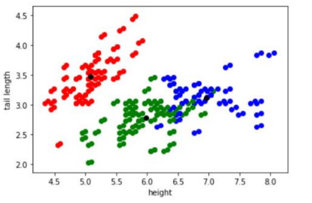
The K Means Clustering code takes in a multi-dimmensional dataset and clusters the data into k groups. The data can then be plotted on any two of the metrics on the x and y axes.
Download Regression Code Download K Means Code Report on Regression and K MeansThis program takes a small sample image and does a nearest neighbour search on a larger image to find the nearest match. The user can choose from a number of algorithms, each using a different metric (differences, sum of squared differences, normalised correlation), to compare the images. The program was written in C++
Download The Code See it on GitHub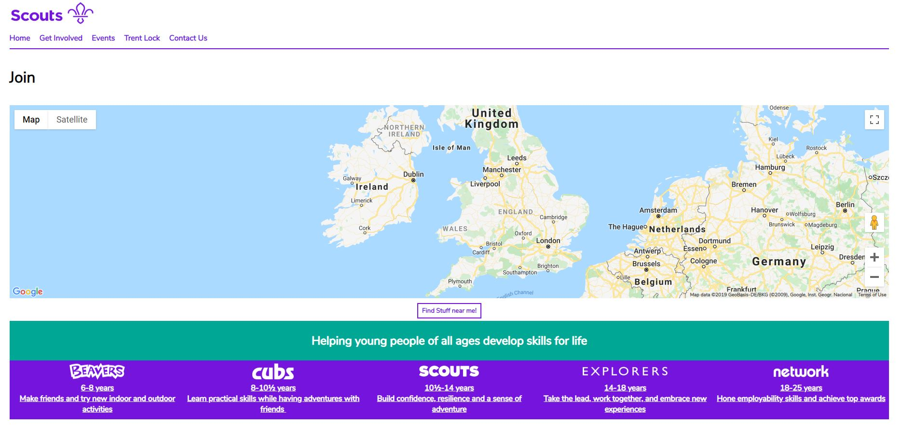
Long Eaton Scout District's website was designed from scratch by myself to replace an older website. It's designed around the needs of the district and ties in visualy with the Scout Association's 2020 re-brand to provide a seemless experience between the National and local levels.
Visit the Site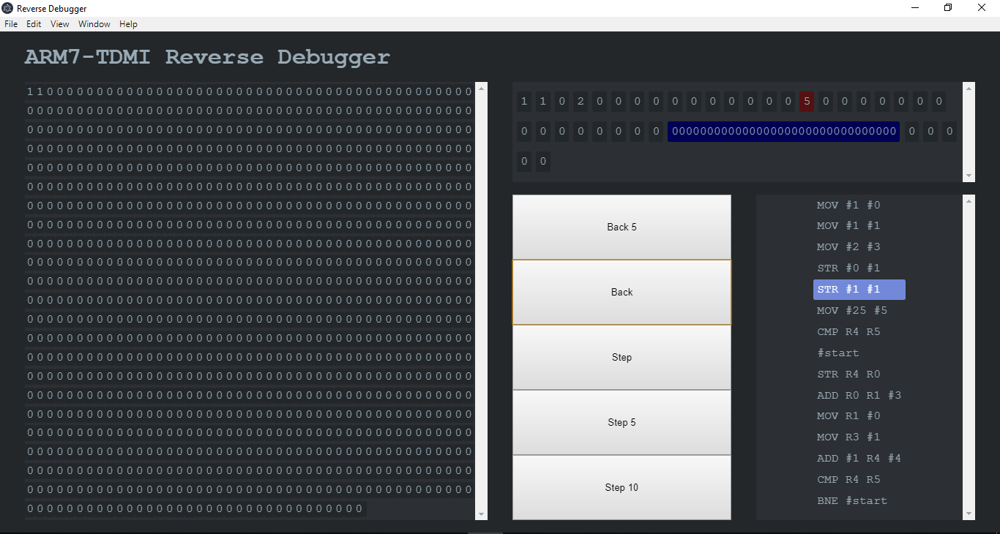
This project was developed for a University group project module, it aimed to emulate the ARM7TDMI processor and its instruction set in C++
See it on Github Project Report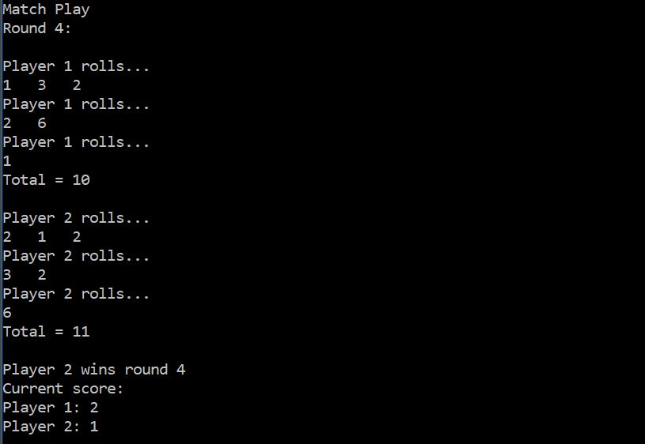
Written in C#, this program runs a virtual dice game called 'Going to Boston', users can play against the computer or another human player in Match play or Score play. The program was written for a University module to demonstrate an understanding of C# and basic OOP
See it on Github Download the Source CodeSome little/unfinished projects that don't really deserve their own section but I thought were fun: